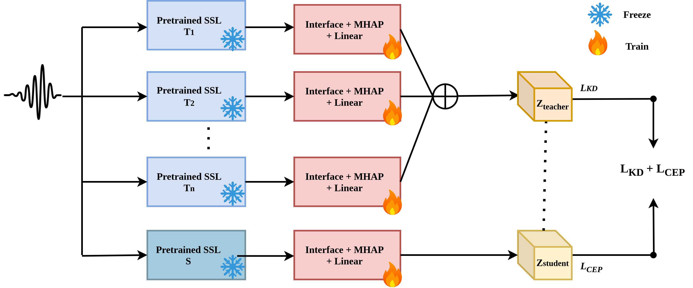

Distill to Defend: Multi-teacher Knowledge Distillation For Spoofing Detection
Abstract.
With the growth of advanced speech synthesis systems, detecting audio deepfakes has become increasingly challenging, especially in handling 'unseen attacks'. Current detection approaches including self-supervised learning and generative models struggle with generalizability and robustness. To address this limitation, we propose a novel ensemble knowledge distillation approach. Embeddings from multiple self-supervised teacher models are distilled to a student model's embedding using knowledge distillation techniques. Experimental results demonstrate that our approach outperforms state-of-the-art methods across various datasets, even though our model is trained only on the ASVspoof 2019 dataset, highlighting its robustness and ability to generalize to unseen attacks. To the best of our knowledge, this is the first ensemble knowledge distillation approach used for audio deepfake detection.
This page is for research results purposes only.
Overview

The overall architecture.
Performance of different student systems across multiple datasets
Evaluation of various student models across different datasets.
| ID | Model | EER(%) (19LA) | minDCF (19LA) | EER(%) (21LA) | minDCF (21LA) | EER(%) (21DF) | EER(%) (ITW) |
|---|---|---|---|---|---|---|---|
| S1 | WavLM Base | 0.47 | 0.014 | 7.55 | 0.377 | 11.79 | 16.08 |
| S2 | WavLM Base Plus | 0.25 | 0.008 | 7.89 | 0.384 | 9.01 | 20.69 |
| S3 | HuBERT Base | 0.66 | 0.020 | 5.81 | 0.335 | 11.73 | 18.75 |
| S4 | Wav2Vec2 Base | 0.36 | 0.011 | 4.83 | 0.311 | 10.22 | 28.59 |
| S5 | UniSpeech-SAT Base | 0.35 | 0.011 | 5.98 | 0.337 | 9.73 | 16.44 |
| S6 | UniSpeech-SAT Base Plus | 0.25 | 0.008 | 3.24 | 0.269 | 8.56 | 15.05 |
Performance of Different Teacher Models
Evaluation of various teacher models across different datasets.
| ID | Model | EER(%)/minDCF (19LA) | EER(%)/minDCF (21LA) | EER(%) (21DF) | EER(%) (ITW) |
|---|---|---|---|---|---|
| T1 | WavLM Large | 0.12/0.003 | 3.27/0.275 | 4.86 | 17.43 |
| T2 | HuBERT Large | 0.35/0.010 | 2.5/0.253 | 8.02 | 18.99 |
| T3 | Wav2Vec2 XLS-R 300m | 0.14/0.004 | 5.77/0.345 | 5.48 | 15.42 |
| T4 | Wav2Vec2 XLS-R 53 | 0.20/0.006 | 6.06/0.344 | 6.14 | 24.32 |
| T5 | Wav2Vec2 Large | 0.39/0.012 | 5.25/0.318 | 9.42 | 15.13 |
| T6 | UniSpeech-SAT Large | 0.53/0.017 | 6.03/0.353 | 5.10 | 18.33 |
Performance of Different Distilled Student Models using multiple teacher models
PKT stands for Probabilistic Knowledge Transfer and SP stands for Similarity Preserving.
| ID | Model | EER(%)/minDCF (19LA) | EER(%)/minDCF (21LA) | EER(%) (21DF) | EER(%) (ITW) |
|---|---|---|---|---|---|
| D1 | Distilled WavLM Base - PKT | 0.44/0.014 | 6.16/0.345 | 12.03 | 15.68 |
| D2 | Distilled WavLM Base - SP | 0.49/0.016 | 6.16/0.344 | 11.09 | 14 |
| D3 | Distilled WavLM Base Plus - PKT | 0.32/0.011 | 8.23/0.391 | 9.07 | 21.28 |
| D4 | Distilled WavLM Base Plus - SP | 0.25/0.008 | 6.83/0.358 | 9.01 | 20.48 |
| D5 | Distilled HuBERT Base - PKT | 0.84/0.022 | 7.14/0.368 | 14.01 | 16.24 |
| D6 | Distilled HuBERT Base - SP | 0.63/0.017 | 6.97/0.369 | 12.54 | 15.93 |
| D7 | Distilled Wav2Vec2 Base - PKT | 0.38/0.012 | 4.69/0.308 | 10.67 | 26.95 |
| D8 | Distilled Wav2Vec2 Base - SP | 0.35/0.01 | 4.73/0.309 | 9.96 | 25.55 |
| D9 | Distilled UniSpeech-SAT Base - PKT | 0.35/0.011 | 6.92/0.355 | 10.61 | 15.68 |
| D10 | Distilled UniSpeech-SAT Base - SP | 0.32/0.009 | 5.04/0.32 | 9.08 | 16.76 |
| D11 | Distilled UniSpeech-SAT Base Plus - PKT | 0.40/0.011 | 5.04/0.314 | 8.34 | 14.74 |
| D12 | Distilled UniSpeech-SAT Base Plus - SP | 0.25/0.007 | 3.28/0.274 | 8.06 | 15.92 |
Performance metrics of different KD loss with single teacher models.
We have chosen the best student model UniSpeech-SAT(B+) as a student model for this experimentation. EER (%) and minDCF obtained by different proposed systems across multiple datasets. T denotes to teacher models, S denotes to the student models. L denotes Large and B denostes Base variants of the said system.
| Method | EER(%)/minDCF (19LA) | EER(%)/minDCF (21LA) | EER(%) (21DF) | EER(%) (ITW) | EER(%)/minDCF (24Eval) |
|---|---|---|---|---|---|
| T1 WavLM (L) w/o KD | 0.12/0.003 | 3.27/0.275 | 4.86 | 17.43 | 12.33/0.3548 |
| T2 HuBERT (L) w/o KD | 0.35/0.010 | 2.50/0.253 | 8.02 | 18.99 | 17.39/0.4989 |
| T3 Wav2Vec2 XLS-R w/o KD | 0.14/0.004 | 5.77/0.345 | 5.48 | 15.42 | 11.30/0.327 |
| S1 WavLM (B) w/o KD | 0.47/0.022 | 7.55/0.398 | 11.79 | 16.08 | 20.52/0.5754 |
| S2 UniSpeech-SAT w/o KD(B) | 0.35/0.011 | 5.98/0.337 | 9.73 | 16.44 | 20.77/0.5862 |
| S3 UniSpeech-SAT (B+) w/o KD | 0.25/0.008 | 3.24/0.269 | 8.56 | 15.05 | 18.28/0.5212 |
| PKT (T3 with KD) | 0.32/0.010 | 5.77/0.336 | 9.03 | 15.60 | 18.83/0.5389 |
| SP (T3 with KD) | 0.29/0.009 | 3.14/0.268 | 6.56 | 15.13 | 16.05/0.4599 |
| Logit (T3 with KD) | 0.33/0.010 | 4.46/0.309 | 11.66 | 13.62 | 18.55/0.5283 |
| PKT (T1 with KD) | 0.26/0.008 | 3.23/0.270 | 9.23 | 17.54 | 18.22/0.5207 |
| SP (T1 with KD) | 0.28/0.008 | 4.18/0.297 | 8.65 | 15.59 | 17.83/0.5115 |
| Logit (T1 with KD) | 0.26/0.008 | 3.13/0.268 | 9.65 | 15.66 | 16.76/0.4832 |
| PKT (T2 with KD) | 0.28/0.008 | 4.90/0.318 | 9.20 | 16.06 | 18.27/0.5232 |
| SP (T2 with KD) | 0.31/0.010 | 3.69/0.285 | 9.24 | 16.75 | 17.91/0.5121 |
| Logit (T2 with KD) | 0.44/0.014 | 3.86/0.289 | 9.11 | 13.57 | 18.56/0.5285 |
| Proposed multi-teacher KD | 0.25/0.007 | 3.28/0.274 | 8.06 | 15.92 | 14.98/0.431 |